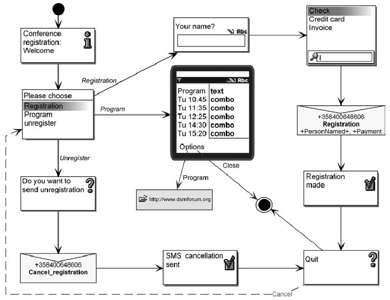
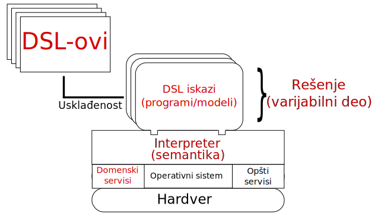
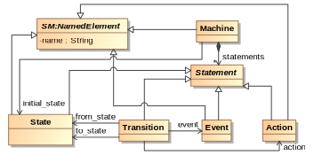
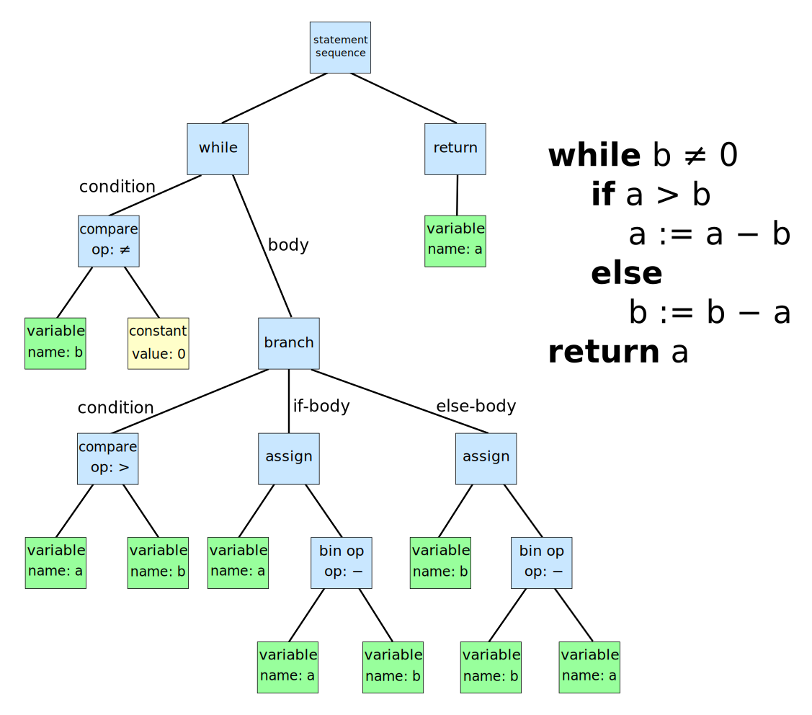
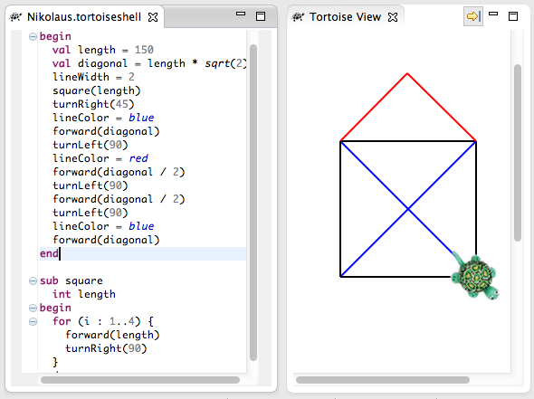

Uvod u jezike specifične za domen
Jezici specifični za domen
Igor Dejanović
- igord@uns.ac.rs
Fakultet tehničkih nauka u Novom Sadu
Katedra za informatiku
Sadržaj
- Problem i motivacija
- Primeri
- Prednosti
- Arhitekture
- Gradivni elementi
- Klasifikacija
- Jezičke radionice
Problem i motivacija
Šta je jezik?
- Komunikacija misli i osećanja sistemom znakova kao što su zvuci, gestovi ili pisani simboli 1.
- Sistem znakova, simbola, gestova i pravila koji se koriste u komunikaciji 2.
Šta je softverski jezik?
- Jezik korišćen u komunikaciji čovek-računar ili računar-računar.
- U varijanti čovek-računar težimo da jezik bude lak za razumevanje od strane čoveka ali ipak da može da se procesira na efikasan način od strane računara.
- U kontekstu razvoj softvera dve su uloge jezika:
- preskriptivna - za opis budućih sisitema
- deskriptivna - za opis postojećih sisitema
Šta domen?
- Sfera delovanja, interesa ili funkcije 1.
- Oblast znanja, uticaja, ili delovanja 2.
- Da bi se domensko znanje moglo procesirati i da bi mogli komunicirati u određenom domenu korisno je definisati ontologiju domena koja opisuje koncepte domena i njihove međusobne veze.
- Primer domena: osiguranje, zdravstvo, finansije, saobraćaj...
- Domeni mogu sadržati poddomene. Na primer, ako je posmatrani domen problema osiguranje, poddomeni mogu biti životno osiguranje, osiguranje vozila, osiguranje nekretnina i sl.
Jezici specifični za domen (Domain-Specific Languages - DSL)
- Jezici specifični za domen (Domain-Specific Languages - DSL) su jezici prilagođeni i ograničeni na određeni domen problema.
- Za razliku od jezika opšte namene (General Purpose Language - GPL), nude povećanje ekspresivnosti kroz upotrebu koncepata i notacija prilagođenih domenu problema i domenskim ekspertima.
- Nazivaju se još i mali jezici (little languages).
- Uspešan DSL je fokusiran na uzak, dobro definisan domen i pokriva ga na odgovarajući način.
- Domen često ima svoj jezik korišćen od strane domenskih eksperata iako ne postoji njegova implementacija na računaru.
Primeri
SQL
SELECT player, stadium
FROM game JOIN goal ON (id=matchid)
JPA mapiranje
@Entity
@Table(name="COURSES")
public class Course {
private long courseId;
private String courseName;
public Course() {
}
public Course(String courseName) {
this.courseName = courseName;
}
@Id
@GeneratedValue
@Column(name="COURSE_ID")
public long getCourseId() {
return this.courseId;
}
}
Build jezici (Ant/Maven/Gradle)

Poslovni procesi - BPMN

Mobilne aplikacije
Ali i...

ili...
pa čak i...

Prednosti
Kada jezik smatramo DSL-om?
- Zavisi od toga šta nam je domen.
- Jezik može biti više ili manje prilagođen nekom domenu.
- U ekstremnom slučaju i opšti jezik kao što je Java možemo smatrati DSL-om ako nam je domen "razvoj softvera". Naravno, iako tačno u teorijskom smislu, u praktičnom gubimo sve prednosti DSL-ova.
- Dobar DSL pokriva uzak, dobro definisan domen (domen problema). Koristi samo koncepte ciljnog domena, ograničen je na dati domen i samim tim je iskazivanje rešenja jezgrovitije i jasnije domenskim ekspertima.
- Čest je slučaj da jezik nastane kao DSL ali se vremenom proširi do te mere da ga možemo smatrati GPL-om.
Uticaj na produktivnost
- Pojedine studije pokazuju da povećanje produktivnosti ide i do 1000% 1.
- Šta je osnovni razlog za povećanje produktivnosti?
Problem mentalnog mapiranja
Rešenje upotrebom DSL-ova
Zašto DSL-ovi?
- DSLovi su koncizniji od jezika opšte namene što omogućava korisnicima da jasnije iskažu svoju nameru.
- DSL sintaksa, bilo tekstualna ili grafička, može se prilagoditi i približiti domenskim ekspertima.
- Koncepti korišćeni u DSLovima su koncepti problemskog (poslovnog) domena što pod određenim uslovima omogućava da domenski eksperti direktno koriste DSL bez posredovanja programera.
- Upotrebom koncepata problemskog domena izbegava se ručno mapiranje na koncepte ciljne implementacione platforme. Taj posao se obavlja automatski upotrebom DSL prevodioca (kompajlera ili generatora koda).
- Iskazivanje rešenja konceptima nezavisnim od korišćene tehnologije rezultuje dužim životnim vekom aplikacije.
- Samodokumentujući jezički iskazi.
Uticaj na kvalitet softvera
- Korišćenje koncepata domena problema dovodi do smanjenja broja linija koda (u terminologiji tekstualnih notacija), što ima pozitivan uticaj na brzinu razvoja i jednostavnost odžavanja.
- Smanjenje broja linija koda ide i do 50 puta u pojedinim domenima primene. Gustina softverskih grešaka (broj softverskih grešaka na hiljadu linija koda) ne zavisi značajno od jezika koji se koristi.
- Iz toga se može zaključiti da DSL jezici kroz smanjenje broja linija koda posredno utiču na smanjenje apsolutnog broja softverskih grešaka što povećava kvalitet softverskog proizvoda i smanjuje cenu održavanja.
- Prevođenje koda na ciljnu platformu (kompajliranje) će rezultovati konzistentnim kodom.
Uticaj na evoluciju aplikacije
- Iskazivanje rešenja konceptima nezavisnim od korišćene tehnologije rezultuje dužim životnim vekom aplikacije.
- Nije potrebno menjati jezičke iskaze (programe/modele) kada dođe do promene tehnologije. Potrebno je promenu uneti u generator koda.
Arhitekture
Arhitektura bazirana na prevodiocima
Arhitektura bazirana na interpreterima
Gradivni elementi
Gradivni elementi DSL-a
Kao i svaki softverski jezik i DSL se sastoji od:- Apstraktne sintakse
- Jedne ili više konkretnih sintaksi
- Semantike
Apstraktna sintaksa
- Određuje pravila validnosti iskaza sa stanovišta njegove strukture.
- Definiše koncepte domena, njihove osobine i međusobne relacije.
- Jezici za definisanje apstraktnih sintaksi jezika se u domenu modelovanja nazivaju meta-meta-modelima. 1
Primer - apstraktna sintaksa jezika za opis konačnih automata
Stablo apstraktne sintakse
- Svaki iskaz na datom jeziku se može na apstraktan način opisati stablom apstraktne sintakse (Abstract Syntax Tree).
- Konkretna sintaksa nije važna u tom slučaju (na primer, ako posmatramo program na Javi tada ključne reči nisu deo stabla apstraktne sintakse).
Primer stabla apstraktne sintakse
 http://en.wikipedia.org/wiki/Abstract_syntax_treeKonkretna sintaksa
- Da bi mogli da prikažemo iskaz na konkretan način potrebna nam je konkretna sintaksa.
- Konkretna sintaksa definiše izgled iskaza na nekom jeziku, odnosno u širem smislu definiše i načine interakcije korisnika sa jezičkim iskazima tj. predstavlja interfejs jezik-korisnik.
- Iako nam je dovoljna jedna konkretna sintaksa za jedan jezik, možemo ih imati više.
Primer istog iskaza upotrebom dve različite konkretne sintakse

Semantika
- Definiše smisao jezičkih iskaza.
- Iako postoje i druge tehnike u praksi se najčešće semantika definiše prevođenjem (kompajliranjem tj. generisanjem koda) na jezik koji već ima definisanu semantiku putem prevodioca na niže jezike ili interpretera (npr. virtualne mašine).
- Najčešće su ciljni jezici na koje se DSL prevodi jezici opšte namene.
- Primer: generisanje Java programskog koda iz DSL jezičkog iskaza.
- Jezici se prevode na sve "niže" i "niže". Gde je kraj prevođenju? Mašinski jezik. Definisan u hardveru računara (procesoru).
Klasifikacija
Podela DSL-ova prema vrsti konkretne sintakse
- Tekstualni
- Grafički
- Tabelarni
- Baziran na ekranskim formama
- ...
- Hibridni - kombinacija više osnovnih
Tekstualne sintakse - prednosti i mane
- Programeri se osećaju "kod kuće".
- Mogu se koristiti regularni tekst editori.
- Serijalizovana forma je identična sa prezentacionom.
- Mogu se koristiti standardni sistemi za kontrolu verzija (Git, Mercurial, Subversion ...).
- Podrška u alatima: bojenje koda, dopuna koda, pretraga, navigacija...
- Mana: Nije pogodna za opis i razumevanje strukture koja nije linearne prirode (grafovi, tabele itd.).
Grafičke sintakse - prednosti
- Razumevanje strukture. Podržano operacijama zoom, pan i sl.
- Često razumljivije domenskim ekspertima (najčešće je domenski jezik grafičke prirode).
- Intuitivniji i lakši za učenje - učenje kroz isprobavanje (paleta sa alatima i konceptima, onemogućavanje kreiranje nevalidnih konstrukcija itd.).
Grafičke sintakse - mane
- Još uvek složeniji za implementaciju i održavanje.
- Za serijalizaciju se koristi format koji se razlikuje od prezentacionog.
- Otežano ili potpuno nemoguće korišćenje standardnih alata za kontrolu verzija. Potrebno je razviti poseban VCS alat.
- Zahteva namenske editore.
Podela prema vrsti domena

Podela DSL-ova prema načinu implementacije
- Interni - Nastali su na bazi već postojećih programskih jezika (najčešće GPL-ova).
- Eksterni - Izrađeni "on nule" definisanjem sintakse i implementacijom kompajlera koji prevodi programe pisane na ovom jeziku na neki drugi jezik (najčešće GPL) ili se program direktno interpretira.
Interni DSL-ovi
- Bazirani na postojećem jeziku i alatima. Najčešće tekstualni.
- Koriste svu infrastrukturu jezika domaćina (editore, debagere, kompajlere/interpretere...).
- Brzi za implementaciju i laki za održavanje. Popularni u pojedinim zajednicama (Ruby, Groovy, Scala...).
- Dobri kao ulaznica u svet DSL/DSM/MDE pristupa.
- Najčešće na pametan način koriste mogućnosti jezika (anonimne funkcije, meta-programiranje itd.).
- Ograničenja konkretne sintakse.
- Svaka namenska biblioteka može se smatrati internim DSL-om (API bazirani)...
- ... ali konkretna sintaksa takvog jezika nije prilagođena domenu.
Eksterni DSL-ovi
- Izrađeni "on nule" -> skuplji razvoj i održavanje.
- Puna kontrola konkretne sintakse -> bolje prilagođavanje domenskim ekspertima.
- Editori i svi propratni alati takođe moraju da se prave "od nule"...
- ...mada danas postoje alati koji nam taj posao olakšavaju.
Neki od poznatijih eksternih DSL-ova
- SQL: tekstualni, domen - rad sa relacionim bazama podataka
- HTML: tekstualni, domen - definisanje sadržaja na vebu
- CSS: tekstualni, domen - stilizovanje sadržaja
- make: tekstualni, domen - izgradnja aplikacije (build)
- LaTeX: tekstualni, domen: kreiranje štampanih materijala (typesetting)
- Window Builder: GUI baziran, domen - izgradnja interfejsa
- R: tekstualni, domen - statistička obrada podataka
Primer: Interni DSL za definisanje email-a (JavaMail API)
MimeMessage message = new MimeMessage(session);
message.setFrom(new InternetAddress(from));
message.addRecipient(Message.RecipientType.TO,
new InternetAddress(to));
message.setSubject("Greetings from Novi Sad");
message.setText("Enjoying my stay in Novi Sad! See you soon!");
Transport.send(message);
Primer: Hipotetički eksterni DSL za definisanje email-a
BEGIN_MAIL myMail
FROM me@myself.com
TO myfriend@somewhere.org
SUBJECT Greetings from Novi Sad
Enjoying my stay in Novi Sad! See you soon!
END_MAIL
SEND myMail
Primer: Interni DSL za definisanje grafički korisničkih interfejsa (Swing)
public DSLKurs() {
setBounds(100, 100, 450, 300);
getContentPane().setLayout(new BorderLayout());
contentPanel.setBorder(new EmptyBorder(5, 5, 5, 5));
getContentPane().add(contentPanel, BorderLayout.CENTER);
contentPanel.setLayout(new FormLayout(new ColumnSpec[ {
FormFactory.RELATED_GAP_COLSPEC,
FormFactory.DEFAULT_COLSPEC,
FormFactory.RELATED_GAP_COLSPEC,
ColumnSpec.decode("default:grow"),},
new RowSpec[] {
FormFactory.RELATED_GAP_ROWSPEC,
FormFactory.DEFAULT_ROWSPEC,
FormFactory.RELATED_GAP_ROWSPEC,
FormFactory.DEFAULT_ROWSPEC,
FormFactory.RELATED_GAP_ROWSPEC,
FormFactory.DEFAULT_ROWSPEC,}));
....
Primer: Eksterni DSL za definisanje grafički korisničkih interfejsa (WindowBuilder)
Primer: Interni DSL za definisanje gramatike jezika (Arpeggio Python)
def number(): return _(r'\d*\.\d*|\d+')
def factor(): return Optional(["+","-"]), [number,
("(", expression, ")")]
def term(): return factor, ZeroOrMore(["*","/"], factor)
def expression(): return term, ZeroOrMore(["+", "-"], term)
def calc(): return OneOrMore(expression), EOF
Primer: Eksterni DSL za definisanje gramatike jezika (Arpeggio PEG)
number = r'\d*\.\d*|\d+'
factor = ("+" / "-")?
(number / "(" expression ")")
term = factor (( "*" / "/") factor)*
expression = term (("+" / "-") term)*
calc = expression+ EOF
Konkretna sintaksa je važna!!!
Neki jezici su pogodniji za kreiranje internih DSL-ova.
Jezici pogodni za kreiranje internih DSL-ova
- Ruby
- Groovy
- Scala
- Lisp
- ...
Primer internog DSL-a (Ruby Sinatra)
get '/dogs' do
# get a listing of all the dogs
end
get '/dog/:id' do
# just get one dog, you might find him like this:
@dog = Dog.find(params[:id])
# using the params convention, you specified in your route
end
post '/dog' do
# create a new dog listing
end
put '/dog/:id' do
# HTTP PUT request method to update an existing dog
end
delete '/dog/:id' do
# HTTP DELETE request method to remove a dog who's been sold!
end
Primer internog DSL-a (Groovy Gradle)
repositories {
mavenCentral()
}
dependencies {
groovy fileTree(dir: new File(gradle.gradleHomeDir, 'lib'),
includes: ['**/groovyall*.jar'])
compile gradleApi()
compile 'eu.appsatori:gradlefatjarplugin:0.1.3',
{
ext.optional = true
}
testCompile 'org.spockframework:spockcore:0.6groovy1.8'
}
Eksterni DSL-ovi omogućavaju potpuno prilagođavanje domenu.
Interni DSL za muzičku notaciju
Score k = new Score(Tonality.G_major);
Bar bar = new Bar(BarType.4_4);
t.addPause(Duration.1_4);
t.addNote(NoteType.A3, Duration.1_4);
t.addNote(NoteType.C2, Duration.1_4);
k.addBar(bar);
Eksterni DSL za muzičku notaciju
U eksternoj varijanti možemo u potpunosti prilagoditi konkretnu sintaksu domenskim ekspertima.
Lilypond note script
Ali se dešava da i u eksternoj varijanti DSL nije prilagođen domenskim ekspertima.Kritike DSL-ova
- Skup razvoj i održavanje jezika.
- Potreba za ekspertima u domenu razvoja jezika koji su istovremeno sposobni da analiziraju domen primene.
- Jezička "kakofonija" (Language Cacophony 1)i potreba da programeri poznaju veliki broj jezika (poseban jezik za svaki tehnički i/ili poslovni domen).
Jezičke radionice
Jezičke radionice (Language Workbenches)
- Integrisana okruženja za razvoj, testiranje i evoluciju jezika i alata za njihovo efikasno korišćenje (editori, interpreteri, kompajleri i sl.). Koriste se kod paradigme razvoja orijentisane ka jezicima (Language Oriented Programming - LOP) 1
- Rešavaju problem brzine razvoja i lakoće održavanja DSL-ova.
- Primeri jezičkih radionica:
- Meta Programming System (MPS)
- xText
- Spoofax
Pristupi
- Projekcione - editori manipulišu direktno apstraktnom reprezentacijom (stablom apstraktne sintakse).
- Bazirane na parserima
Meta Programming System (MPS)
- JetBrains - http://www.jetbrains.com/mps/
- Podrška za različite konkretne sintakse (notacije): tablarne, tekstualne, bazirani na ćelijama, grafičke (u najavi).
- Projekciona jezička radionica - editori manipulišu direktno apstraktnom reprezentacijom (stablom apstraktne sintakse). Čak i u slučaju tekstualnih notacija.
- Podrška za kontrolu verzija.
Meta Programming System - karakterističan izgled
 http://www.jetbrains.com/mps/docs/tutorial.html
http://www.jetbrains.com/mps/docs/tutorial.html
xText
- Nastao kao deo projekta slobodnog softvera - openArchitectureWare.
- Iza razvoja u najvećoj meri stoji nemačka firma Itemis.
- Postao deo Eclipse projekta.
- Tekstualne sintakse. EBNF-like gramatika.
- Upotreba ECore meta-metamodela 1. Meta-model se generiše iz gramatike a može da koristi i već postojeći meta-model.
- Generisanje Eclipse editora sa podrškom za bojenje sintakse, navigaciju, outline pogled itd.
- xText bazirani DSL se duboko integriše u Eclipse okruženje i teško je uočiti razliku sa podrškom za bilo koji drugi jezik sa Eclipse podrškom (npr. Java).
xText - Little tortoise jezik
 http://www.eclipse.org/Xtext/7languagesDoc.html#tortoisexText - Little tortoise gramatika
 http://www.eclipse.org/Xtext/7languagesDoc.html#tortoise
http://www.eclipse.org/Xtext/7languagesDoc.html#tortoise
xText - primeri
Za dokumentaciju sa primerom izgradnje 7 različitih jezika pogledati http://www.eclipse.org/Xtext/7languagesDoc.htmlSpoofax
- Kao i xText baziran na parsiranju i tekstualnim sintaksama. Kreira punu podršku za jezik u vidu Eclipse priključaka.
- Istraživački projekat na TU Delft u Holandiji.
- Gramatika jezika se definiše meta-jezikom SDF (Syntax Definition Formalism).
- Parser koristi SGLR algoritam (Scanerless GLR) i omogućava parsiranje punog skupa kontekstno slobodnih gramatika. U slučaju neodređenosti parser vraća šumu parsiranja (parse forest) dok u slučaju determinističke gramatike vraća uvek stablo parsiranja (parse tree).
- Za tranformaciju programa i prepisivanje stabala koristi se DSL Stratego.
Spoofax - karakterističan izgled

Inženjerstvo softverskih jezika
- Software Language Engineering - SLE.
- Pravac i pogled na razvoj softverskih jezika koji pokušava da ujedini sve druge pravce koji u osnovi imaju razvoj i upotrebu softverskih jezika (MDE/MDA/DSM.., ontologije, grammarware, Language Oriented Programming...).
- Anneke Kleppe se smatra predvodnikom ovog pokreta. 1
- Jedna od ideja je izjednačavanje modela i programa - kao jedinstven naziv predložen je mogram.
Literatura
- M. Völter, DSL Engineering: Designing, Implementing and Using Domain-Specific Languages. 2013
- S. Kelly and J.-P. Tolvanen, Domain-Specific Modeling: Enabling Full Code Generation. Wiley-IEEE Computer Society Pr, March 2008
- I. Dejanović, Prilog metodama brzog razvoja softvera na bazi proširivih jezičkih specifikacija. PhD thesis, Faculty of Technical Sciences, University of Novi Sad, Trg Dositeja Obradovića 6, January 2012